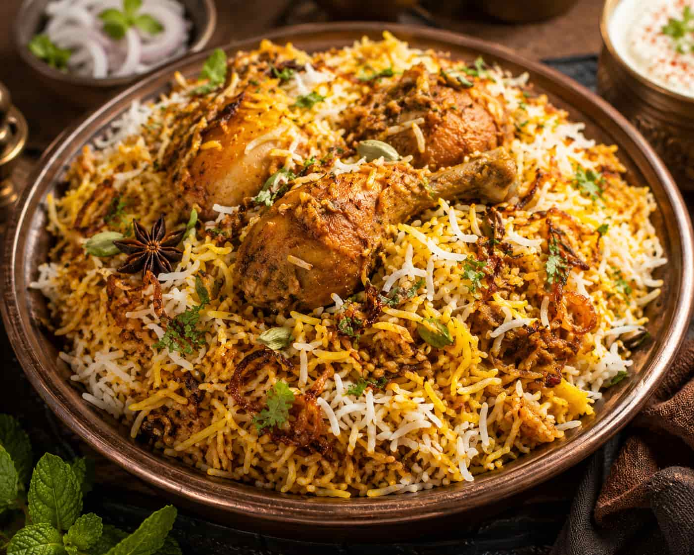
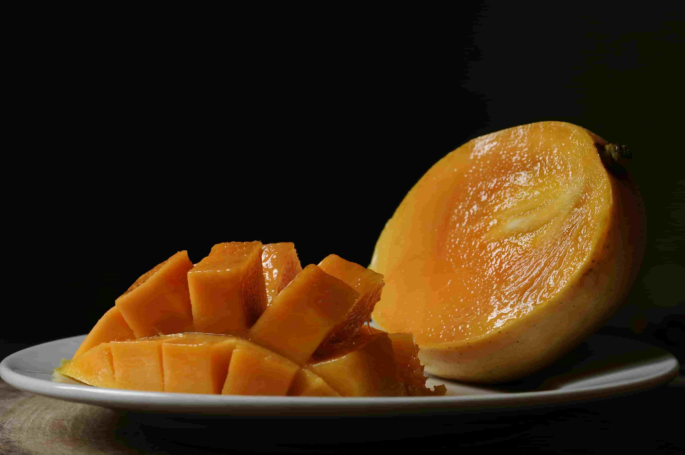
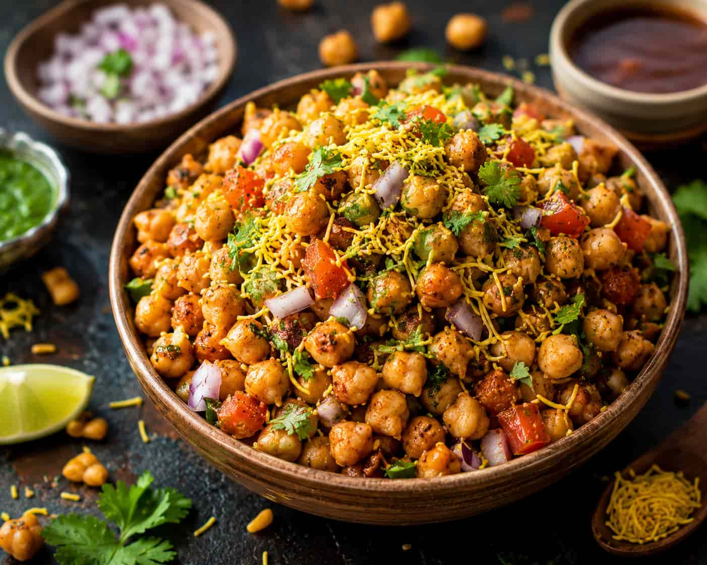
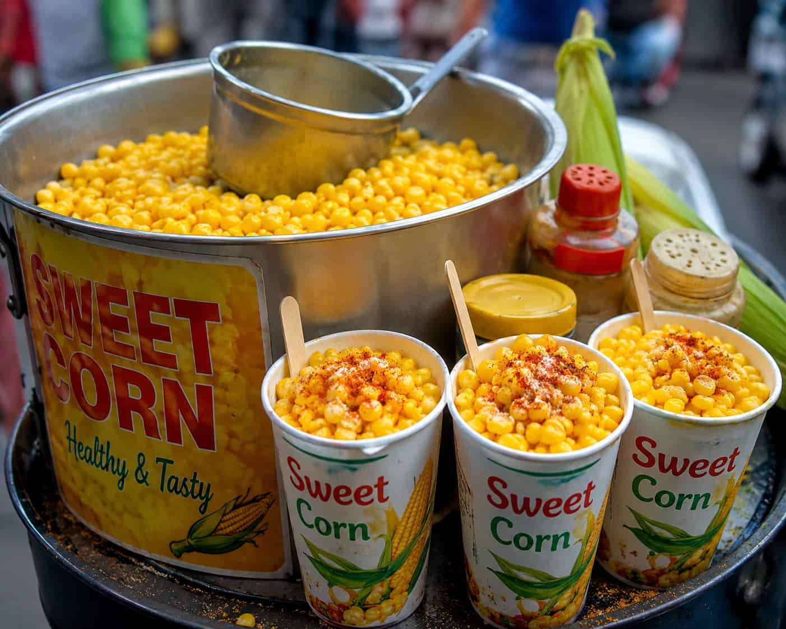
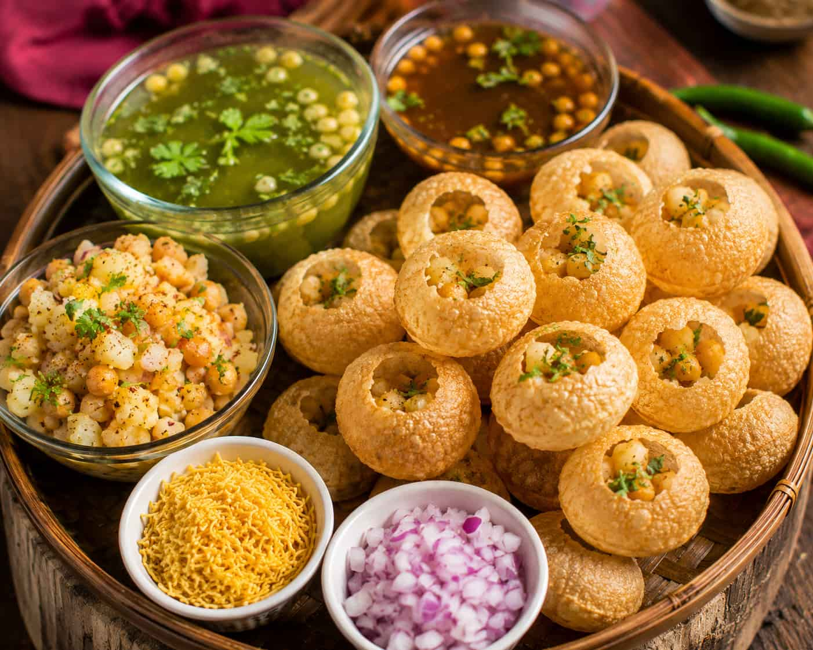
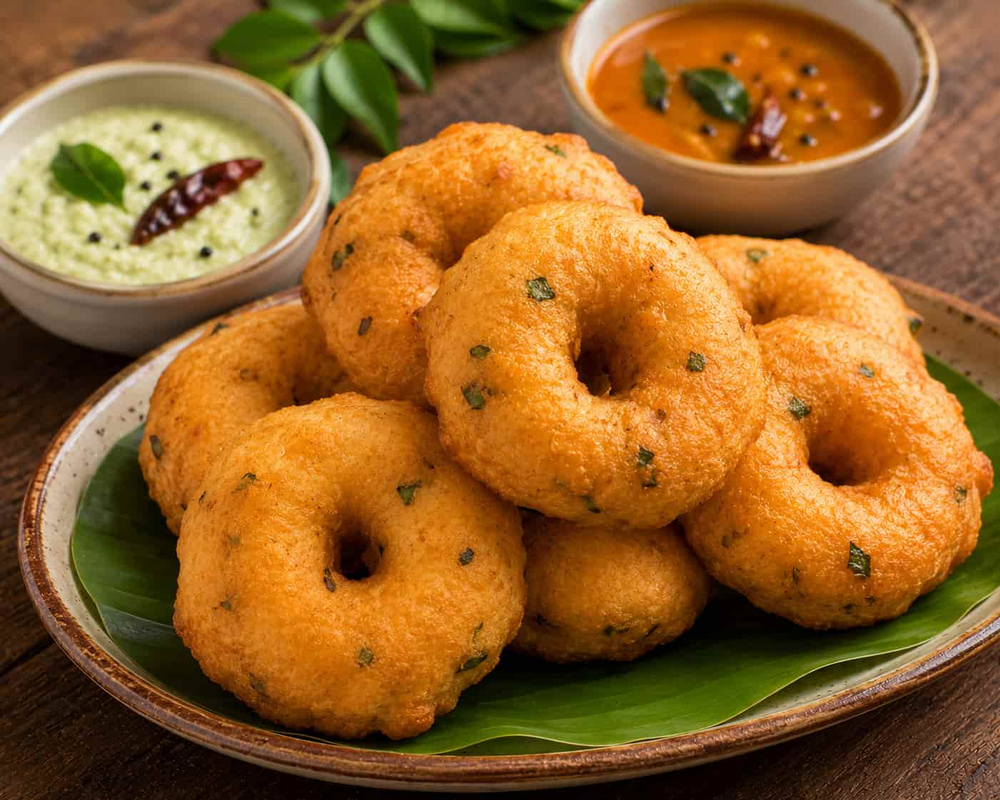
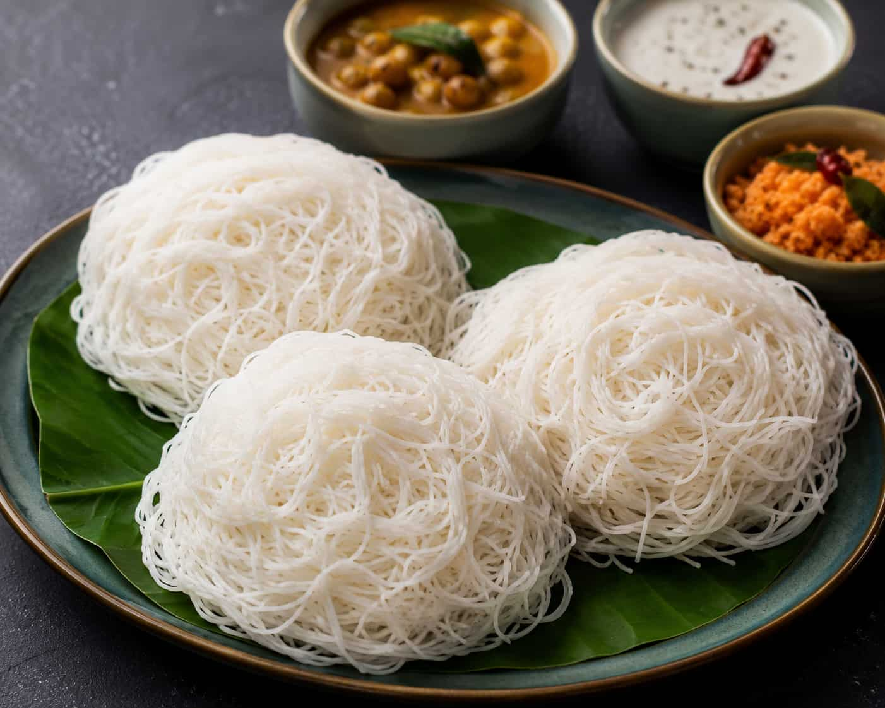
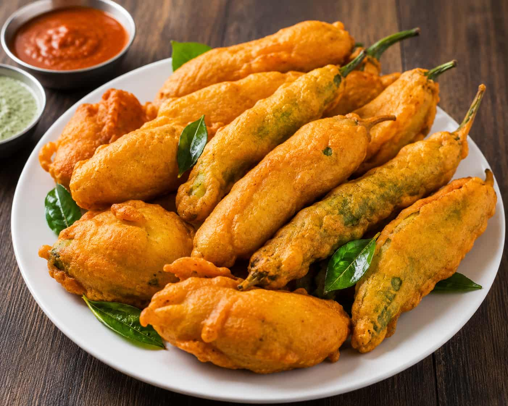
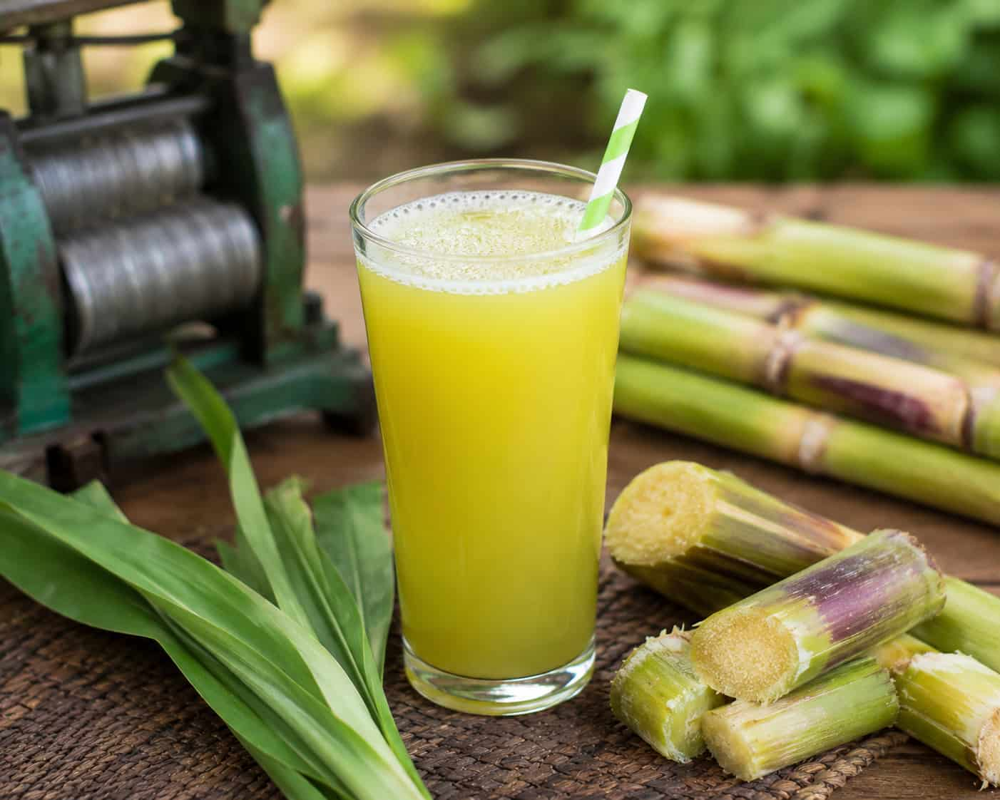
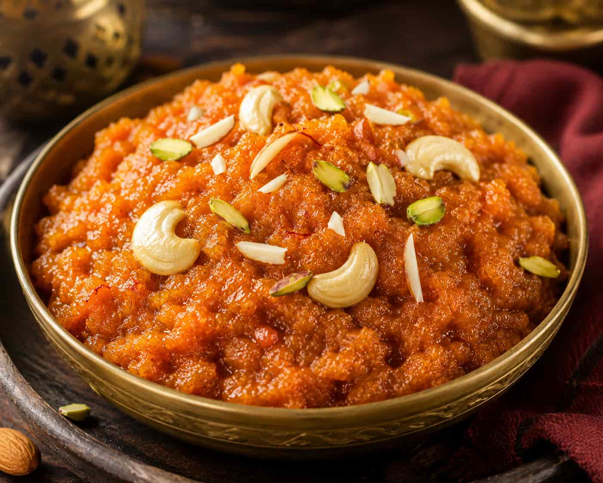

1. Krishnagiri Biryani

The most famous street food in Krishnagiri is without doubt the biryani. Known for its rich spices and tender meat, Krishnagiri biryani is a must try for every food lover!
Read our complete Krishnagiri Biryani guide!
2. Fresh Mango Snacks

Krishnagiri is the mango capital of Tamil Nadu! Fresh mango snacks are available on every street corner during mango season from April to July.
Read our complete Krishnagiri Mango guide!
3. Sundal

Sundal is a popular street food snack in Krishnagiri made from boiled chickpeas seasoned with coconut, mustard seeds and curry leaves. Healthy and delicious!
4. Sweet Corn

Sweet corn is one of the most popular evening snacks in Krishnagiri! You can find sweet corn stalls all across Krishnagiri town serving hot and delicious sweet corn with butter and spices!
5. Pani Puri

Pani Puri is extremely popular in Krishnagiri especially among young people. The crispy puris filled with spicy tangy water make it an unforgettable street food experience!
6. Vada

Crispy and hot vada is a breakfast favourite in Krishnagiri. Best enjoyed with coconut chutney and sambar in the early morning hours!
7. Idiyappam

Soft and delicate idiyappam with coconut milk is a traditional Krishnagiri breakfast that locals have been enjoying for generations!
8. Bajji

Evening snack time in Krishnagiri means hot and crispy bajji! Made from banana, potato or onion dipped in spiced batter and deep fried to perfection!
9. Sugarcane Juice

Fresh sugarcane juice is the perfect drink to beat the Krishnagiri heat! Freshly pressed and served with a squeeze of lemon it is absolutely refreshing!
10. Halwa

Krishnagiri is famous for its delicious halwa made from wheat, sugar and ghee. A perfect sweet ending to any street food adventure in Krishnagiri!